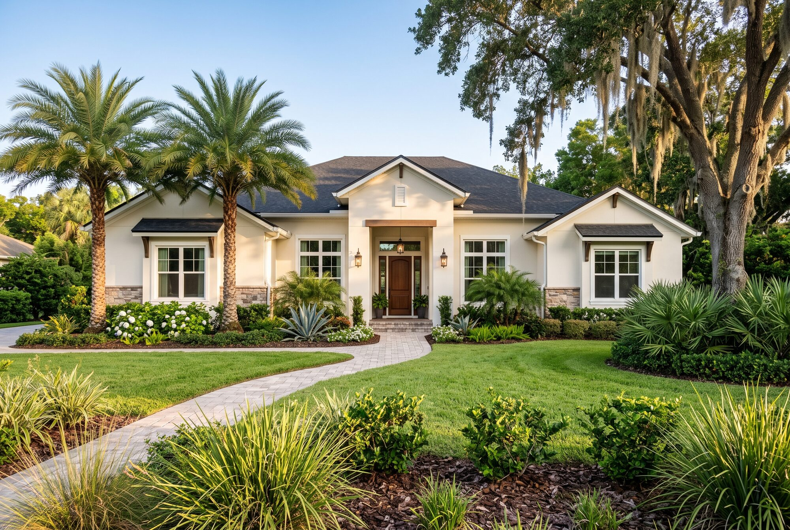

New construction · Orlando and Central Florida
The builder has a rep. You should too.
The friendly person in the model home works for the builder, and does that job well. Bringing your own broker costs you nothing, and it changes who is reading the contract, who is at the walkthroughs, and who is asking the questions you haven't thought of yet.

Why the first visit matters
Why the first visit matters more than you'd think
Most builders will only recognize your broker if you register them on your first visit to the community, or before you contact the sales office. Walk in alone, sign the guest book, and the builder may treat you as unrepresented for that community from then on. The fix is simple: tell me where you want to look, and we go together, or I register you ahead of time.
That is also the reason this page exists. If you are early, and just browsing, that is the best possible time to call.
What a new build hides
What a new build hides that a resale doesn't
With a resale, you can see the house. With a new build, you are buying a lot, a floor plan, a set of selections, and a builder's promise, and the contract is the builder's, written for the builder. A few places where a second set of eyes earns its keep:
-
The contract
Builder purchase agreements are long, non-negotiable in places, and different from the standard Florida resale contract. Deposits, change orders, delay language, and what happens if your financing falls through all deserve a careful read before you sign.
-
The incentives
“Closing costs paid” and rate buy-downs are usually tied to the builder's preferred lender and title company. Sometimes that is the best deal available. Sometimes it isn't. You should know the all-in number both ways before choosing.
-
The lot
Lot premiums, what will be built behind you, drainage, the pond you can see on the plat but not yet on the ground, and where the community's future phases go.
-
The carrying costs
Many new communities sit in a CDD (Community Development District), which adds a line to the tax bill on top of the HOA. The model-home payment estimate may not show it. Ask for the full picture.
-
The inspections
The county inspects for code. Nobody inspects for workmanship unless you hire someone. An independent inspection before drywall goes up, and again before closing, is money well spent on a house nobody has lived in.
From model home to keys
How it goes, from model home to keys
-
1. Narrow the list
We talk about budget, commute, schools, and timeline, then pick a handful of communities worth your Saturday. New construction is spread across every direction from Orlando, and the right area depends on where your life happens.
-
2. Visit, with questions ready
I come along, or register you first. We ask about build times, what's included versus upgraded, lot availability, and what the builder is doing for buyers this month.
-
3. Read the contract before you sign it
Deposits, selections, change-order rules, the estimated completion date and what it really commits the builder to.
-
4. Keep an eye on the build
Site visits as the house goes up, an independent pre-drywall inspection, and a running list of anything that needs fixing before it is covered up.
-
5. Final walkthrough and closing
A second independent inspection, a punch list the builder actually completes, and a close read of the settlement statement so the credits you were promised are the credits you get.
-
6. After you move in
Builder warranties have deadlines. I'll remind you about the ones that matter, including the one-year walk, so small things get fixed on the builder's dime.
Where homes are going up
Where new homes are going up around Orlando
These are the areas where most of the new-construction activity is right now. Each has a different feel, a different commute, and a different price point. I'll tell you plainly which ones I know well.
-
Lake Nona and southeast Orlando
Master-planned, newer, close to the airport and the medical city. Our Lake Nona guide.
-
Horizon West, Winter Garden and Windermere
The fastest-growing corner of west Orange County, village by village. Our Horizon West guide and our Windermere guide.
-
St. Cloud, Harmony and Kissimmee
Osceola County communities with more house for the money, and longer commutes.
-
Clermont and Minneola
Lake County hills, newer communities, and the turnpike into town.
-
Apopka and the Wekiva corridor
Northwest Orange County, with new neighborhoods opening along the 429.
-
Sanford, Lake Mary and Oviedo
Seminole County, where infill and the last large tracts are being built out. Lake Mary and Oviedo guides.
-
Davenport and Haines City
Polk County, just over the line, with a heavy mix of vacation-rental communities. Worth knowing which is which.
-
Deltona, DeLand and Daytona's west side
Volusia County, farther out, with new communities along I-4 and SR 44.
Search new homes
Search new homes
Builder inventory moves differently from the resale market, and some of it never shows on the MLS. Start with the search below, then call and I'll tell you what else is coming to the communities you like.
Selling first? Most buyers moving into a new build have a house to sell, and builders are used to contingent timelines. A different way to sell your home starts with an honest first number.
Common questions
Common questions about buying new construction in Orlando
Does using my own broker cost me anything?
In almost every case, no. Builders budget for broker co-operation and pay it from their side. Ask me about any community where that is not the case before we visit.
Will I get a better price without a broker?
Builders rarely cut the price for an unrepresented buyer; the margin stays with the builder. What a broker changes is the contract you sign, the credits you capture, and the problems caught before closing.
Do I have to use the builder's lender?
No. Builder incentives are often tied to their lender, so the question is whether the incentive outweighs a better rate or lower fees elsewhere. Get both quotes and compare the whole number.
How long does a new build take?
It depends on the builder, the community, and whether the home is already under way. Quick move-in inventory can close in weeks; a build from the ground up is usually a matter of months. The contract's completion language matters more than the sales office's estimate.
Should I get an inspection on a brand-new house?
Yes. Twice, ideally: before drywall and before closing. New does not mean finished correctly, and the county inspector is checking code, not craftsmanship.
Start here
Start here, and I'll follow up personally
Tell me roughly where you want to be, your timeline, and whether there's a house to sell first. I'll reply with a short list of communities worth a look, and we'll go from there.
How this usually starts
A conversation, before a single model home.
Call 321-488-5542 or write to mdc@crawfordliving.com. If you've already visited a community on your own, tell me which one, and we'll sort out where things stand.